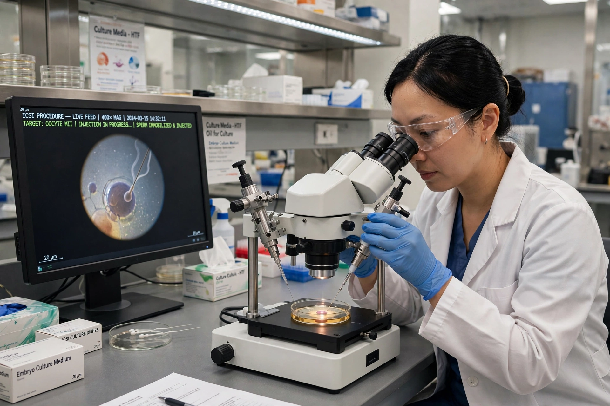

In vitro fertilisation
From Wikipedia, the free encyclopedia
In vitro fertilisation (IVF) is an assisted reproductive technology in which an egg is fertilised by sperm outside the body, in a laboratory dish ('in vitro' — in glass), and the resulting embryo is transferred to the uterus. It is a mainstay treatment for infertility, used when other methods fail or are impossible. The first IVF baby, Louise Brown, was born in England in 1978; since then well over ten million babies have been born by IVF worldwide.

[Image: An embryologist at a microscope performing ICSI in an IVF laboratory]
Procedure
Treatment usually involves hormone stimulation so the ovaries produce several eggs, ultrasound-guided egg retrieval, fertilisation in the laboratory (sometimes by injecting a single sperm into the egg — ICSI, used for male-factor infertility), embryo culture for a few days, and transfer of one or more embryos. Extra embryos can be frozen for later attempts. Success per cycle varies mainly with the woman's age, averaging roughly a quarter to a third for younger women in many statistics.
Issues
IVF raises ethical and social questions about embryo status, surplus embryos, preimplantation genetic testing, donor eggs and sperm, surrogacy, cost and access, and the age limits of treatment. Multiple pregnancy — historically a major risk — has been reduced by single embryo transfer. The pioneers Robert Edwards, Patrick Steptoe and Jean Purdy saw Edwards receive the Nobel Prize in 2010.